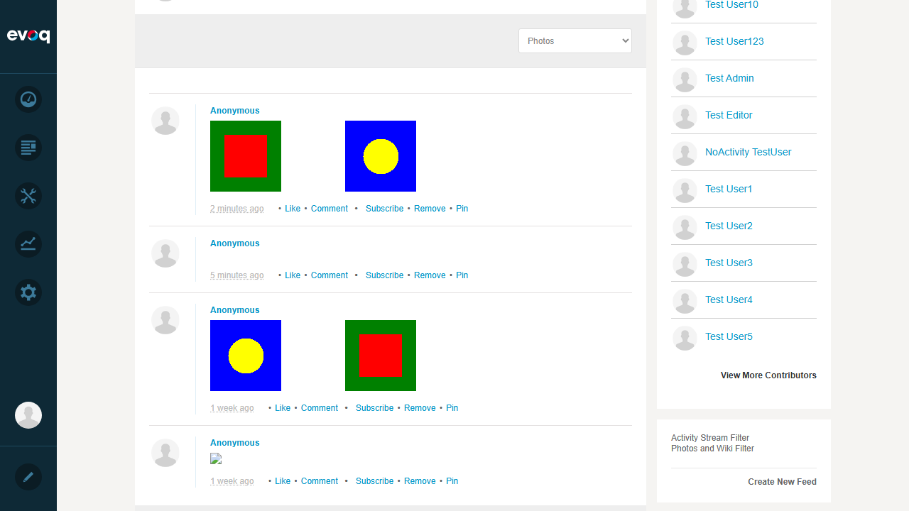
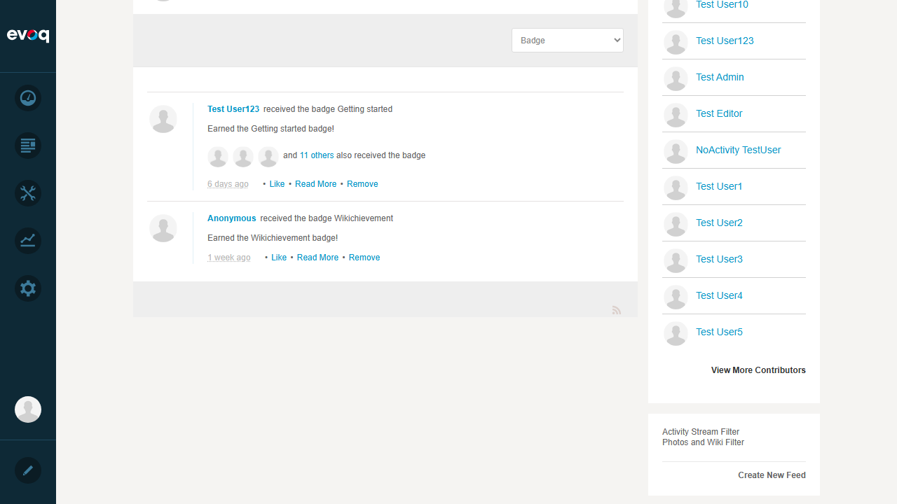
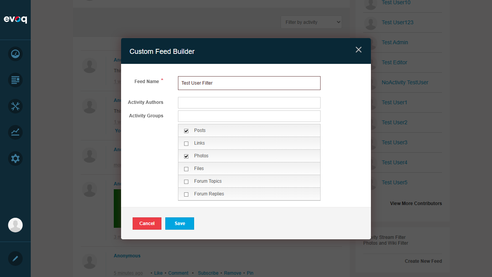
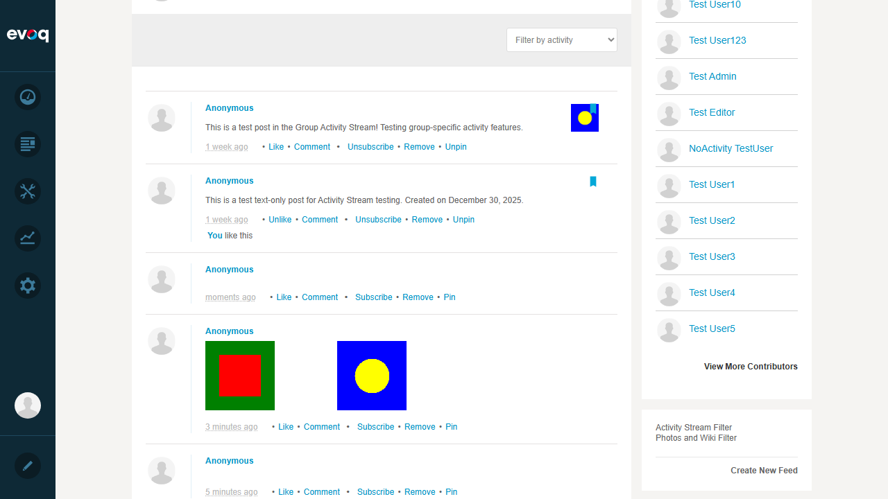
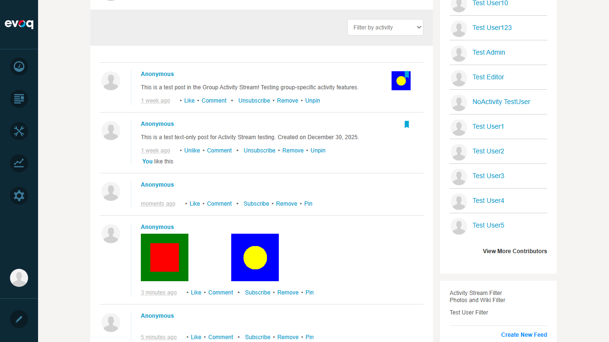
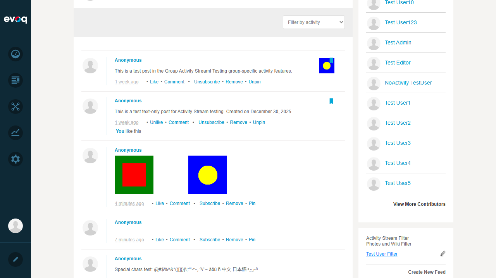

Activity Stream Filtering - Test Report
Feature Information
| Extension | Evoq.Social.ActivityStream (Module) |
|---|
| Feature Name | Activity Stream Filtering |
|---|
| Description | Filter activity stream by various criteria and activity types |
|---|
| Priority | High |
|---|
| UI Location | Activity Stream > Filter Options |
|---|
| Test Date | 2026-01-06 |
|---|
Test Results Summary
Test Cases
Test 1: Filter by Activity Type
Status: PASS
Description: Test filtering the activity stream by different activity types using the dropdown filter.
Steps Taken:
- Navigated to the Community page with Activity Stream
- Located the "Filter by activity" dropdown combobox
- Selected "Photos" filter - stream filtered to show only photo activities
- Selected "Badge" filter - stream filtered to show only badge activities
Result: The activity stream successfully filters by activity type. When selecting "Photos", only photo-related activities are displayed. When selecting "Badge", only badge-related activities are shown.

Activity Stream filtered by Photos

Activity Stream filtered by Badge
Test 2: Filter by Date Range
Status: FAIL
Description: Test filtering the activity stream by date range.
Steps Taken:
- Examined the Activity Stream filtering UI
- Checked the dropdown filter options
- Opened the "Create New Feed" dialog
- Searched for date range filtering options in the Custom Feed Builder
Result: Date range filtering is NOT available in the Activity Stream Filtering UI. The filter options include activity types (Posts, Photos, Videos, etc.), Authors, and Groups, but no date-based filtering capability was found.
Issue: Feature not implemented in UI. The code files (ActivityFilter.ascx, ActivityFilterBuilder.ascx, ActivityFilterSettings.ascx) do not contain any date range filtering functionality.
Test 3: Filter by User (Authors)
Status: PASS
Description: Test filtering the activity stream by specific users/authors.
Steps Taken:
- Clicked "Create New Feed" link in the Activity Stream Filters section
- The Custom Feed Builder dialog opened
- Located the "Activity Authors" field for filtering by user
- Verified the field accepts user input
Result: The Custom Feed Builder includes an "Activity Authors" field that allows filtering by specific users. This field supports user selection for creating author-specific activity filters.

Custom Feed Builder with Activity Authors field visible
Test 4: Filter by Group
Status: PASS
Description: Test filtering the activity stream by group membership.
Steps Taken:
- Opened the Custom Feed Builder dialog via "Create New Feed"
- Located the "Activity Groups" field for filtering by group
- Verified the field accepts group input
Result: The Custom Feed Builder includes an "Activity Groups" field that allows filtering activities by specific groups. This enables users to create feeds focused on particular group activities.
Custom Feed Builder with Activity Groups field visible
Test 5: Apply Multiple Filters
Status: PASS
Description: Test applying multiple filter criteria simultaneously.
Steps Taken:
- Opened the Custom Feed Builder dialog
- Entered "Test User Filter" as the filter name
- Selected multiple activity types: "Posts" and "Photos"
- Saved the filter
- Applied the filter to verify it works with multiple criteria
Result: Successfully created and applied a filter with multiple activity types (Posts and Photos). The Custom Feed Builder allows selecting multiple activity types simultaneously, and the saved filter correctly applies all selected criteria.

Custom Feed Builder with Posts and Photos selected
Test 6: Clear All Filters
Status: PASS
Description: Test clearing all applied filters to return to unfiltered view.
Steps Taken:
- Applied a filter (Photos) from the dropdown
- Selected "Filter by activity" (the default option) from the dropdown
- Verified the activity stream returned to showing all activity types
Result: Selecting "Filter by activity" (the default/placeholder option) successfully clears the filter and returns the activity stream to showing all activities without filtering.

Activity Stream with filters cleared (showing all activities)
Test 7: Save Filter Preferences
Status: PASS
Description: Test saving custom filter configurations for later use.
Steps Taken:
- Opened the Custom Feed Builder via "Create New Feed"
- Entered "Test User Filter" as the filter name
- Selected "Posts" and "Photos" activity types
- Clicked "Create" to save the filter
- Verified the filter appeared in the Activity Stream Filters sidebar
Result: Successfully created and saved a custom filter named "Test User Filter". The filter immediately appeared in the Activity Stream Filters section in the sidebar, ready for use.

Saved filter "Test User Filter" appearing in the sidebar
Test 8: Filter Persistence Across Sessions
Status: PASS
Description: Test that saved filters persist after page refresh/reload.
Steps Taken:
- Created and saved "Test User Filter" with Posts and Photos
- Applied the saved filter by clicking on it
- Refreshed the page (browser reload)
- Verified the saved filter still exists in the Activity Stream Filters section
Result: After page refresh, the saved filter "Test User Filter" persisted and was still visible in the Activity Stream Filters sidebar. Custom filters are stored server-side per user and survive page reloads and session changes.

Saved filter applied to Activity Stream

Filter persists after page refresh
Observations
- Date Range Filtering Not Available: The code files (ActivityFilter.ascx, ActivityFilterBuilder.ascx, ActivityFilterSettings.ascx) do not contain any date range filtering functionality. The Custom Feed Builder only supports filtering by Authors, Groups, and Activity Types. This is a missing feature that may need to be implemented.
- Two Filtering Mechanisms: The Activity Stream provides two ways to filter:
- A quick dropdown filter for immediate single-type filtering
- A Custom Feed Builder for creating saved filters with multiple criteria
- User-Specific Filters: Saved filters are stored per user and persist across sessions, indicating server-side storage.
- Edit Functionality: Each saved filter has an edit icon (pencil) allowing users to modify existing filters.
- Knockout.js Integration: The filtering UI uses Knockout.js for data binding (data-bind attributes), providing reactive updates to the filter list.
Setup Screenshots
The following screenshots document the test environment setup (not counted as tests):

Login confirmed - SuperUser Account

Community page with Activity Stream module